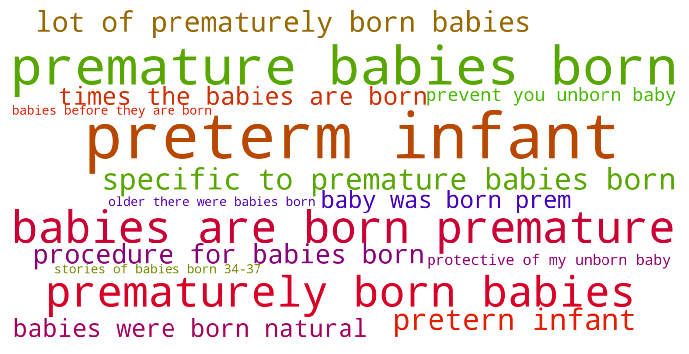
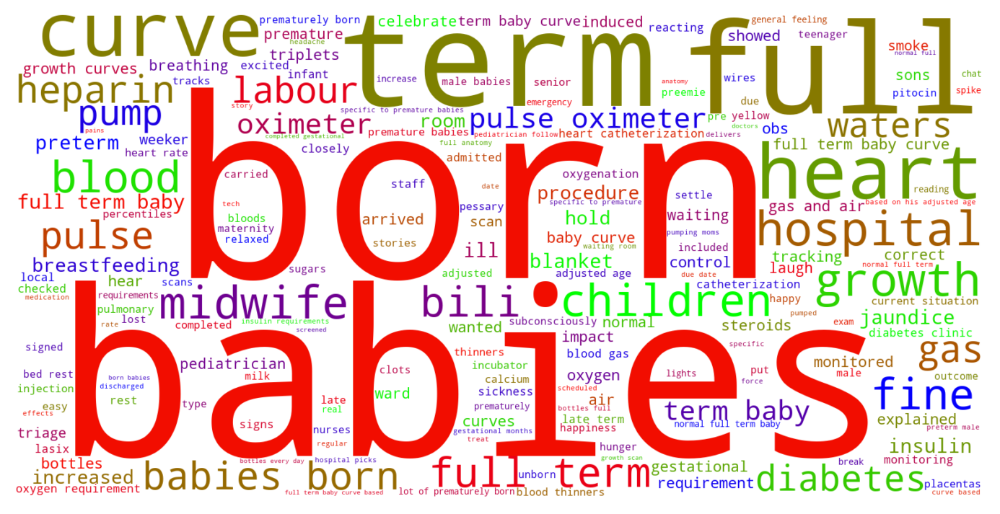

Jump to section:
Samples from Social CorpusHits per UMLS Alias on Social Corpus
Word Cloud Comparison
Embedding Space Comparison
Nearest Neighbors by Semantic Type
Related Analysed Concepts
Samples from Social Corpus
While the majority of times the babies are born completely fine , it can sometimes be a low marker for Down Syndrome .
Confidence: 0.586. Reddit link
Then today she showed us a different curve , one that is specific to premature babies born at various completed gestational months and his percentiles have suddenly increased .
Confidence: 0.797. Reddit link
My first ( and only ) baby was born prem and very poorly .
Confidence: 0.566. Reddit link
Any stories of babies born 34-37 weeks welcome !
Confidence: 0.512. Reddit link
And came across an [ article ]( from the Children's Hospital of Philadelphia about breastfeeding a late preterm infant .
Confidence: 1.000. Reddit link
I mean , what about the moms who lose their babies before they are born ( fetal demise ) ?
Confidence: 0.514. Reddit link
My first 2 babies were born natural .
Confidence: 0.579. Reddit link
My pretern infant is now 51 weeks ( 10 weeks past due date ) and still in the NICU .
Confidence: 0.786. Reddit link
1 in 10 babies are born premature , and it is easy to feel alone at a time you really , really need people around you .
Confidence: 0.891. Reddit link
I've reached my second trimester of pregnancy a couple of weeks ago and have found myself getting more and more protective of my unborn baby each and every day .
Confidence: 0.542. Reddit link
Hits per UMLS Alias on Social Corpus
-
babies born premature
12 hits
-
prematurity unborn baby
2 hits
-
preterm infant
2 hits
-
prematurity fetus
0 hits
-
preterm infant nos
0 hits
-
premature baby
0 hits
-
prematurity nos
0 hits
-
prematurity foetus nos
0 hits
-
immature baby
0 hits
-
prematurity fetus nos
0 hits
Word Cloud Comparison
Keywords matching C0728731
Keywords matched against concept. Word size represents frequency.
Keywords co-occurring with C0728731
Co-occurrence is measured at the document-level (i.e. Reddit submissions). Frequencies are normalized to account for keywords common to all CUIs.
Embedding Space Comparison
T-SNE comparison for word embeddings learned from medical domain (EuroPMC) and social media (Reddit) independently.
Pearson correlation for union of closest 1000 neighbors: 0.099
Nearest Neighbors by Semantic Type
Most similar concepts in each of the selected UMLS semantic types. Based on concept embeddings from social corpus.
T047 (Disease or Syndrome)
-
C0231341
Aging premature
0.877 Similarity
-
C0033036
Atrial premature contractions
0.762 Similarity
-
C0340464
Extrasystoles
0.724 Similarity
-
C0025322
Early menopause
0.720 Similarity
-
C0015934
Intrauterine growth restriction
0.674 Similarity
-
C0021296
Small baby
0.661 Similarity
-
C0159020
Fits newborn
0.660 Similarity
-
C4704910
Sepsis during pregnancy
0.660 Similarity
T100 (Age Group)
-
C3494262
Extremely preterm infant
0.866 Similarity
-
C4048294
Preterm baby
0.862 Similarity
-
C4551581
Full term baby
0.825 Similarity
-
C0021289
Newborn
0.734 Similarity
-
C0021270
Baby
0.714 Similarity
-
C1708505
Infant toddler
0.580 Similarity
-
C0728836
Young child
0.565 Similarity
-
C0008059
Child
0.544 Similarity
T046 (Pathologic Function)
-
C0151526
Pre term
0.854 Similarity
-
C0022876
Early labor
0.810 Similarity
-
C0729264
Preterm premature rupture membrane
0.762 Similarity
-
C0015944
Pregnancy prom
0.731 Similarity
-
C0269810
Sepsis during labor
0.676 Similarity
-
C0000832
Placental abruption
0.666 Similarity
-
C0032993
Post dates
0.665 Similarity
-
C0015927
Iud
0.661 Similarity
T079 (Temporal Concept)
-
C2964377
Preterm time
0.737 Similarity
-
C0016145
First born child
0.664 Similarity
-
C0231330
Infancy
0.648 Similarity
-
C0443252
Long term
0.648 Similarity
-
C0022872
Second stage labour
0.608 Similarity
-
C1279941
Late stage
0.605 Similarity
-
C0022871
Labor first stage
0.600 Similarity
-
C0421451
Birthdate
0.599 Similarity
T019 (Congenital Abnormality)
-
C0000768
Birth defect
0.672 Similarity
-
C4551649
Hip dysplasia developmental
0.656 Similarity
-
C0020636
Underdevelopment
0.634 Similarity
-
C0149530
Congenital heart block
0.624 Similarity
-
C0152021
Congenital heart disease
0.620 Similarity
-
C0018798
Heart defect
0.617 Similarity
-
C3536558
Complex congenital heart defect
0.612 Similarity
-
C0266449
Brain malformation
0.612 Similarity
T074 (Medical Device)
-
C3878817
Bib infant child
0.660 Similarity
-
C0179275
Infant bed
0.586 Similarity
-
C0812894
Enteral feeding supplies
0.526 Similarity
-
C0462877
Oxygen giving set
0.525 Similarity
-
C1314747
Bottle nursing
0.521 Similarity
-
C0179281
Bed pediatric
0.519 Similarity
-
C0593622
Home pregnancy test
0.513 Similarity
-
C0030163
Pacemaker
0.510 Similarity
T049 (Cell or Molecular Dysfunction)
-
C4725191
Stop lost
0.656 Similarity
-
C0544885
Stop gain
0.572 Similarity
-
C1705285
Mutated
0.545 Similarity
-
C0002938
Aneuploidy
0.491 Similarity
-
C0008628
Del
0.477 Similarity
-
C0008625
Chromosomal abnormality
0.471 Similarity
-
C0041107
Trisomy
0.451 Similarity
-
C0040715
Translocation
0.436 Similarity
T101 (Patient or Disabled Group)
-
C0233363
Monoamniotic twins
0.648 Similarity
-
C0008098
Child hospitalized
0.606 Similarity
-
C0871503
Dying patients
0.591 Similarity
-
C0683995
Drug exposed child
0.576 Similarity
-
C0259916
Disabled child
0.572 Similarity
-
C0260101
Sick child
0.557 Similarity
-
C0175950
Problem children
0.557 Similarity
-
C0175842
Autistic children
0.541 Similarity
T042 (Organ or Tissue Function)
-
C0032058
Placentation
0.647 Similarity
-
C4244173
Gestational development process
0.635 Similarity
-
C1749797
Heart development
0.622 Similarity
-
C1656559
Gut development
0.602 Similarity
-
C1160388
Respiratory tube development
0.594 Similarity
-
C0037271
Aged skin
0.575 Similarity
-
C1656421
Ear development
0.574 Similarity
-
C1160389
Lung development
0.571 Similarity
T184 (Sign or Symptom)
-
C0565619
Fetal distress labor
0.647 Similarity
-
C0231243
Complications early
0.630 Similarity
-
C2735340
Preterm labor symptoms
0.628 Similarity
-
C0231809
Dyspnea leaning over
0.593 Similarity
-
C0237326
Dyschezia
0.587 Similarity
-
C0522179
Death anxiety
0.579 Similarity
-
C0270274
Vomiting newborn
0.578 Similarity
-
C2985326
Signs impending birth
0.574 Similarity
T037 (Injury or Poisoning)
-
C0686721
Baby shaken
0.646 Similarity
-
C0005604
Traumatic birth
0.636 Similarity
-
C0269858
Traumatic lesion during delivery
0.606 Similarity
-
C1959898
Traumatic injury during pregnancy
0.602 Similarity
-
C0417108
Jump from burning hospital
0.596 Similarity
-
C3544104
Exposure during pregnancy
0.589 Similarity
-
C3203359
Ruptures
0.579 Similarity
-
C0026771
Wound multiple
0.576 Similarity
T039 (Physiologic Function)
-
C0205714
Development infant
0.640 Similarity
-
C0015928
Fetal development
0.587 Similarity
-
C3824789
Fetus development
0.568 Similarity
-
C0020119
Human development
0.550 Similarity
-
C0743925
Fetal growth
0.542 Similarity
-
C0599423
Joint stress
0.510 Similarity
-
C0858972
Baby sleep
0.509 Similarity
-
C2256369
Heart process
0.506 Similarity
T032 (Organism Attribute)
-
C0017504
Gestational age
0.634 Similarity
-
C0005612
Weight baby
0.627 Similarity
-
C0518035
Children growth
0.626 Similarity
-
C0001779
Age
0.593 Similarity
-
C1954788
Gestational age weeks
0.566 Similarity
-
C0805393
Breathing spontaneous
0.564 Similarity
-
C0751992
Fetal weight
0.554 Similarity
-
C0005890
Stature
0.535 Similarity
T023 (Body Part, Organ, or Organ Component)
-
C0007776
Grey matter
0.627 Similarity
-
C0930593
Bony part hard palate
0.599 Similarity
-
C1268107
Lung part
0.599 Similarity
-
C0042149
Uterus
0.584 Similarity
-
C1268155
Placenta part
0.556 Similarity
-
C0013303
Duodenum
0.534 Similarity
-
C0018787
Heart
0.533 Similarity
-
C0229402
Incus long process
0.527 Similarity
T005 (Virus)
-
C1220459
Hart park group
0.626 Similarity
-
C3743464
Mycobacteriophage whirlwind
0.583 Similarity
-
C5058350
Fairfax lookout virus
0.550 Similarity
-
C3768023
Mycobacteriophage conspiracy
0.541 Similarity
-
C4433204
King virus
0.535 Similarity
-
C0205939
Cold virus common
0.530 Similarity
-
C3949524
Mischivirus
0.520 Similarity
-
C5116712
Bjornvirus
0.497 Similarity
T067 (Phenomenon or Process)
-
C0023983
Long term effects
0.608 Similarity
-
C0870455
Early childhood development
0.595 Similarity
-
C0337240
Fall while being carried
0.584 Similarity
-
C2986841
Binding potential
0.560 Similarity
-
C0023670
Events life change
0.538 Similarity
-
C0677038
Increase pressure
0.475 Similarity
-
C0023672
Experience life
0.455 Similarity
-
C0871732
Environmental stress
0.448 Similarity
T060 (Diagnostic Procedure)
-
C0033053
Prenatal diagnoses
0.605 Similarity
-
C0489835
Heart study
0.591 Similarity
-
C2599434
Newborn hearing screen
0.585 Similarity
-
C0040862
Labor trial
0.584 Similarity
-
C4529960
Heart test
0.560 Similarity
-
C0596473
Detection early
0.560 Similarity
-
C1704567
Still point
0.559 Similarity
-
C3494278
Maternal serum screening tests
0.555 Similarity
T061 (Therapeutic or Preventive Procedure)
-
C0582605
Traumatic incident reduction
0.600 Similarity
-
C2317425
Bathing infant
0.594 Similarity
-
C1276380
Advice about taking aspirin
0.592 Similarity
-
C0011209
Delivery
0.588 Similarity
-
C0242835
Reduction fetal
0.587 Similarity
-
C0269704
Spontaneous vaginal breech birth
0.587 Similarity
-
C0195710
Footling breech delivery
0.585 Similarity
-
C0404370
Delivery after coming head
0.584 Similarity
T048 (Mental or Behavioral Dysfunction)
-
C0003537
Losing words
0.597 Similarity
-
C0036857
Severe mental handicap
0.596 Similarity
-
C1306341
Mental disability
0.588 Similarity
-
C0038436
Ptsd
0.586 Similarity
-
C0338927
Hospitalism
0.584 Similarity
-
C0008073
Developmental disabilities
0.582 Similarity
-
C0023186
Learning differences
0.572 Similarity
-
C0008060
Child abuse
0.572 Similarity
T044 (Molecular Function)
-
C0887940
Gene arrangements
0.581 Similarity
-
C1749457
Ligands activity
0.507 Similarity
-
C1149397
Heartless ligand
0.491 Similarity
-
C1752422
Wing hair outgrowth
0.487 Similarity
-
C1150342
Dopachrome rearranging enzyme
0.480 Similarity
-
C1149528
Wishful thinking binding
0.466 Similarity
-
C1721104
Breaks dna
0.460 Similarity
-
C2247516
Sgah
0.440 Similarity
T054 (Social Behavior)
-
C0260023
Mother child
0.576 Similarity
-
C0582101
Talking about dying
0.560 Similarity
-
C2936696
Group thinking
0.553 Similarity
-
C0815201
Couple relations
0.536 Similarity
-
C4277668
Anti vaccine group
0.534 Similarity
-
C0597728
Protected sex
0.524 Similarity
-
C0282657
Infibulations
0.523 Similarity
-
C0008091
Child rearing
0.519 Similarity
T201 (Clinical Attribute)
-
C0566679
Length labor
0.575 Similarity
-
C1286282
Birth outcomes
0.571 Similarity
-
C0012655
Predisposition
0.569 Similarity
-
C1286057
Completeness placenta
0.564 Similarity
-
C1705488
Ftm
0.560 Similarity
-
C1868670
Other growth
0.555 Similarity
-
C1997846
Heart rate recovery time
0.551 Similarity
-
C0419505
Infant milestones
0.543 Similarity
T059 (Laboratory Procedure)
-
C0200896
Cytogenetic studies
0.573 Similarity
-
C1295143
Fetal fibronectin test
0.544 Similarity
-
C0545131
Cbc diff
0.541 Similarity
-
C0023901
Liver tests
0.525 Similarity
-
C0026040
Sectionings thin
0.523 Similarity
-
C0524167
Lead test
0.512 Similarity
-
C0368930
Clotting time
0.512 Similarity
-
C0430065
Standard pregnancy test
0.500 Similarity
T007 (Bacterium)
-
C0995648
Genus quinella
0.567 Similarity
-
C0018154
Gram positive bacteria
0.517 Similarity
-
C0579233
Group b strep
0.468 Similarity
-
C1015849
Wigglesworthia
0.452 Similarity
-
C0995705
Frankia
0.451 Similarity
-
C0597134
Flora oral
0.425 Similarity
-
C0022828
L forms
0.420 Similarity
-
C1016530
Hallella
0.410 Similarity
T200 (Clinical Drug)
-
C0718788
Baby oil top
0.566 Similarity
-
C3216620
Progesterone vaginal product
0.526 Similarity
-
C3218395
Papain pill
0.511 Similarity
-
C0723917
Triple antibiotic ointment
0.489 Similarity
-
C5222490
Progesterone injection
0.427 Similarity
-
C1247687
Progesterone suppositories vaginal
0.426 Similarity
-
C1247002
Misoprostol oral tablet
0.422 Similarity
-
C1242003
Mol iron tablets
0.413 Similarity
T018 (Embryonic Structure)
-
C0553522
Cord placenta umbilical
0.563 Similarity
-
C0553498
Gestational sac
0.548 Similarity
-
C0008508
Chorionic villi
0.530 Similarity
-
C0440731
Fetal brain
0.529 Similarity
-
C0032043
Placenta
0.527 Similarity
-
C0015965
Fetal
0.525 Similarity
-
C0008503
Chorionic
0.515 Similarity
-
C1278988
Entire placenta
0.515 Similarity
T031 (Body Substance)
-
C1446336
Multiple plaques
0.562 Similarity
-
C0007806
Spinal fluid
0.536 Similarity
-
C3532405
Swab from placenta
0.523 Similarity
-
C0392908
Secretion vaginal
0.502 Similarity
-
C0439057
Early morning urine
0.495 Similarity
-
C0225379
Upper respiratory fluid
0.478 Similarity
-
C0162371
Cord blood
0.476 Similarity
-
C1549095
Brain cyst fluid
0.475 Similarity
T190 (Anatomical Abnormality)
-
C4732742
Hole center heart
0.560 Similarity
-
C3887590
Stricture ureter
0.560 Similarity
-
C0266785
Umbilical cord issue
0.548 Similarity
-
C1265602
Multiple masses
0.537 Similarity
-
C0269852
Previa vasa
0.537 Similarity
-
C0405024
Accessory placenta
0.520 Similarity
-
C4025734
Anomaly scalp
0.514 Similarity
-
C0302142
Anatomic abnormality
0.510 Similarity
T041 (Mental Process)
-
C0237722
Emotional maturity
0.559 Similarity
-
C0424157
Fear going crazy
0.544 Similarity
-
C3825022
Hate children
0.535 Similarity
-
C0025361
Thought process
0.535 Similarity
-
C0677838
Grief loss
0.534 Similarity
-
C0282124
Near death experience
0.533 Similarity
-
C0009636
Concept development
0.528 Similarity
-
C3825260
Anger children
0.528 Similarity
T034 (Laboratory or Test Result)
-
C0240802
Positive pregnancy test
0.525 Similarity
-
C3898879
Triple positive
0.519 Similarity
-
C0427777
Pregnancy results tests
0.518 Similarity
-
C5206315
Nse positive
0.510 Similarity
-
C5206317
Mme positive
0.505 Similarity
-
C0588465
Sperm forward progression
0.499 Similarity
-
C0427780
Negative pregnancy test
0.495 Similarity
-
C4524569
Donor retested negative
0.487 Similarity
T195 (Antibiotic)
-
C0723285
Septa
0.491 Similarity
-
C0003232
Antibiotics
0.456 Similarity
-
C0718950
Biomox
0.439 Similarity
-
C0013090
Doxycycline
0.436 Similarity
-
C0310367
Today
0.422 Similarity
-
C1564058
Roxi basics
0.416 Similarity
-
C0718575
Antibiotics ear
0.394 Similarity
-
C0701901
Baypen
0.361 Similarity